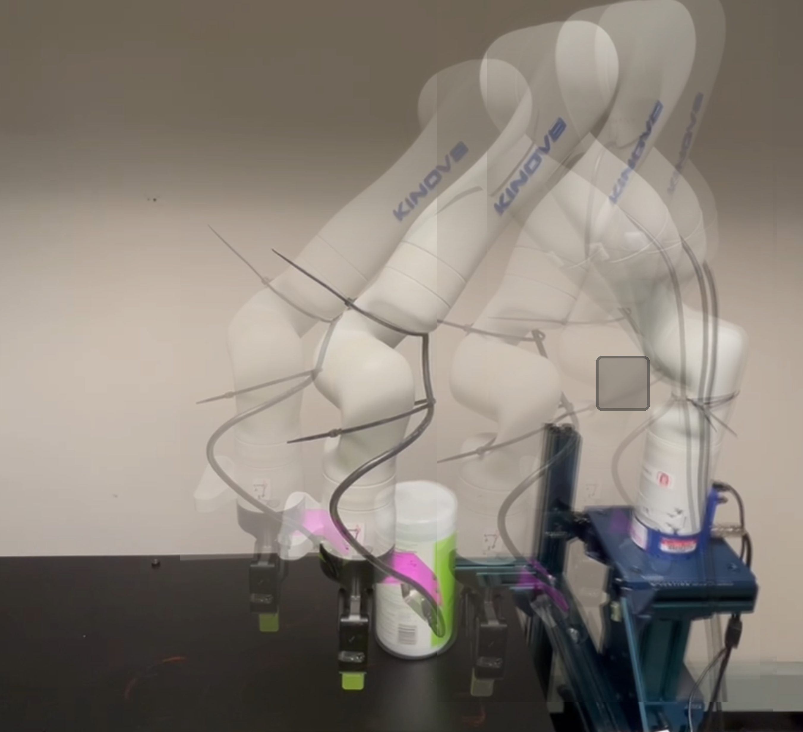
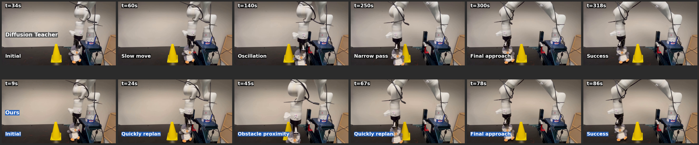
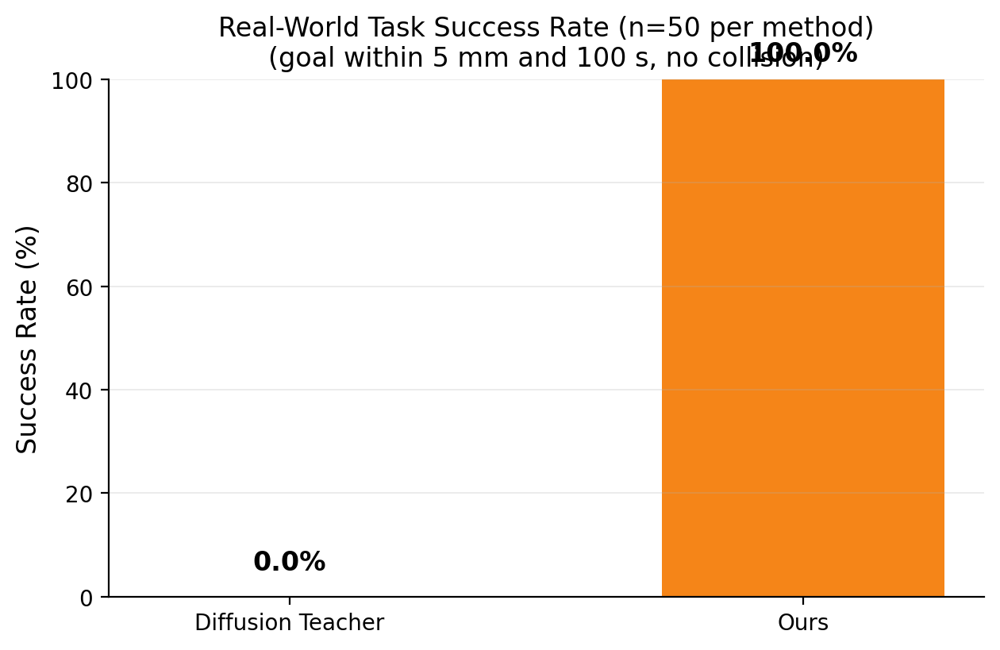
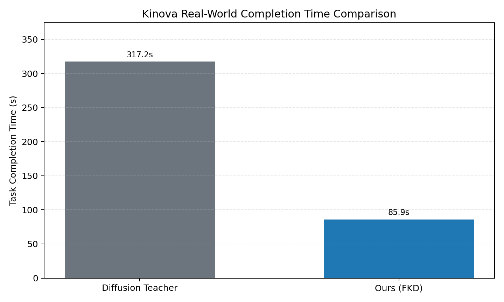
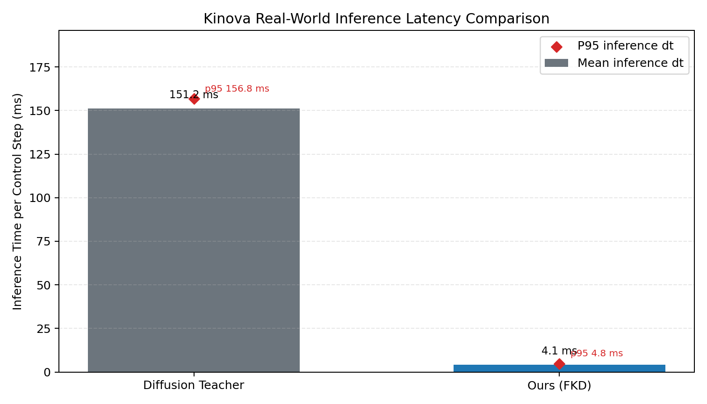

Diffusion models excel at generating diverse, multimodal trajectories and action sequences for robotic control, yet their iterative denoising process introduces latency that can constrain real-time closed-loop execution. To address this problem, we propose a Dynamic Neural Koopman (DNK) distillation framework, which distills multistep diffusion inference into a single forward pass conditioned on observations and sampled noise. Specifically, we introduce a Factorized Dynamic Koopman (FDK) layer that models the denoising process through a latent linear transition. The noisy trajectory input is lifted into a latent space, where the FDK layer parameterizes a factorized linear operator with condition-dependent eigenvalues that adapt the noisy-to-denoised transition to the current context. We evaluate DNK across robot-control benchmarks that span locomotion, state-based, and image-based manipulation, comparing against accelerated generative-policy baselines. The results demonstrate that one-step DNK outperforms accelerated generative-policy baselines in most evaluated settings while retaining teacher-comparable performance at millisecond-scale inference latency. On long-horizon manipulation tasks, DNK achieves competitive performance with substantially fewer inference parameters than the one-step policy baselines. Hardware experiments on a physical Kinova manipulator further demonstrate millisecond-scale inference and reduced task completion time.
Problem setting
We study real-time continuous-control policy distillation under offline
teacher supervision. The objective is to learn a one-step student policy
that preserves both return quality and trajectory-distribution structure
of a diffusion teacher while significantly reducing per-decision latency.
Let the teacher generate candidate trajectories and action selections
under the same state distribution. The student is optimized to reproduce
teacher-consistent behavior in a Koopman latent space with dynamic
transition refinement. Evaluation targets: normalized return, latency
statistics, within-run variability
\(\sigma_{\mathrm{ep}}\), and worst-case return.
Implementation details. Evaluation protocol: 50 parallel
environments, 10 episodes per seed, 64 candidate actions, and D4RL
normalized return as the primary task metric.
Overall framework
DNK distills diffusion-planner behavior into a dynamic neural Koopman
student for one-step deployment while preserving trajectory diversity.
Implementation details. The DNK design uses an FDK
layer: a factorized latent Koopman transition whose eigenvalues depend
on the current context, plus a lightweight action head. Teacher
supervision transfers both performance and trajectory-structure priors
into the student.
Simulation environments
We report results on Walker2d-medium-expert-v2 and
HalfCheetah-medium-expert-v2.
Experimental protocol
Fixed seeds: all main and ablation statistics are aggregated over 5 random seeds (seed 0-4).
Evaluator settings: 50 parallel vectorized environments, 10 episodes per seed, 1000-step episode cap, and 64 action candidates for candidate-based selectors.
Normalization definition: returns are reported as D4RL normalized scores from the benchmark environment API and aggregated as mean ± std across seeds.
Latency measurement: decision latency is measured per control step from policy decision start to selected action output; we report mean latency, p95 latency, and latency std (ms).
Software/hardware: experiments are executed with the CleanDiffuser evaluation pipeline on Linux using GPU-enabled PyTorch inference and MuJoCo-backed D4RL simulation.
Implementation details. Offline control benchmarks are
evaluated in vectorized simulation with fixed protocol across methods:
5 random seeds, 50 parallel environments per seed, 10 episodes per seed,
horizon cap of 1000 steps, and 64 candidate trajectories/actions for
candidate-based selectors.
Numerical results
Quantitative comparison results on D4RL locomotion tasks.
TD and TE denote task-specific
DDPM and EDM teachers, respectively. CT has no pretrained diffusion
teacher. Bold marks the best displayed one-step student value on each task.
Task
Method
Return ↑
Latency (ms) ↓
HalfCheetah
DDPM Teacher (TD)
0.867 ± 0.004
36.94 ± 0.63
EDM Teacher (TE)
0.842 ± 0.012
6.72 ± 0.02
CD (TE)
0.428 ± 0.013
1.08 ± 2.32
CT
0.403 ± 0.025
1.08 ± 2.31
CP (TE)
0.676 ± 0.012
2.03 ± 0.11
OneDP-S
0.748 ± 0.030
2.03 ± 0.11
KDM (TD)
0.553 ± 0.024
0.34 ± 0.03
KDM-F (TD)
0.510 ± 0.004
0.86 ± 0.03
DNK (Ours) (TD)
0.873 ± 0.007
0.68 ± 0.39
Walker2d
DDPM Teacher (TD)
1.109 ± 0.000
49.65 ± 0.12
EDM Teacher (TE)
1.108 ± 0.001
6.67 ± 0.01
CD (TE)
0.689 ± 0.010
1.09 ± 2.33
CT
0.387 ± 0.017
1.09 ± 2.37
CP (TE)
1.059 ± 0.013
1.11 ± 0.07
OneDP-S (TD)
1.105 ± 0.000
2.03 ± 0.11
KDM (TD)
0.620 ± 0.011
0.35 ± 0.04
KDM-F (TD)
0.396 ± 0.066
0.87 ± 0.03
DNK (Ours) (TD)
1.095 ± 0.001
0.60 ± 0.42
Simulation rollout comparison videos
Side-by-side rollouts for Teacher, Ours, Consistency Policy, KDM, and KDM-F on each benchmark.
Walker2d-medium-expert-v2
TeacherOursCPKDMKDM-F
HalfCheetah-medium-expert-v2
TeacherOursCPKDMKDM-F
Online latency-aware replay (teacher vs student)
To reflect deployment-time latency, we provide synchronized replay where
playback speed is adjusted by measured decision latency. In this mode,
the teacher stream is slowed according to the teacher/student latency
ratio, making the real-time responsiveness gap visually explicit.
Implementation details. Replay scaling uses measured
decision-time means. Teacher playback rate is inversely proportional to
the teacher/student latency ratio, while student playback remains at
real-time speed; controls synchronize reset and start events.
Ablation: number of refinement steps J
We vary J in training and inference (5 seeds each).
Task
J
Return ↑
Latency (ms) ↓
σep ↓
Worst-case Return ↑
Walker2d
1
1.095 ± 0.001
0.60 ± 0.42
0.0005
1.0934
2
1.0951 ± 0.0001
3.03 ± 0.51
0.0003
1.0945
3
1.0977 ± 0.0002
3.24 ± 0.49
0.0004
1.0965
4
1.0995 ± 0.0001
3.63 ± 0.41
0.0002
1.0988
HalfCheetah
1
0.873 ± 0.007
0.68 ± 0.39
0.0134
0.8386
2
0.8767 ± 0.0027
0.94 ± 0.35
0.0127
0.8514
3
0.8178 ± 0.0012
1.10 ± 0.35
0.0180
0.7566
4
0.8774 ± 0.0015
1.26 ± 0.35
0.0117
0.8486
Hardware: Teacher vs Ours
On the physical Kinova manipulator, we compare the diffusion teacher and our
one-step distilled policy under the same task specification, replanning pipeline,
and low-level controller (50 trials per method).
Experimental setup

Kinova Gen3 obstacle-aware reconfiguration task in the real-world setup.
Real-world quantitative results
Metric
Diffusion Teacher
Ours
Mean inference latency (ms) ↓
151.00 ± 3.73
4.08 ± 0.20
P95 inference latency (ms) ↓
158.27 ± 3.78
4.73 ± 0.23
Completion time (s) ↓
314.95 ± 3.54
85.43 ± 2.53
Terminal error (mm) ↓
3.09 ± 1.42
3.46 ± 1.75
Minimum clearance (mm) ↑
46.29 ± 12.91
48.95 ± 12.12
Rollout videos
Kinova Gen3 hardware evaluation at 2× speed; paired clips support synchronized play and reset.
Diffusion Teacher (simulation).Ours (simulation).
2x SpeedDiffusion Teacher (real-world side view, 2x replay).2x SpeedOurs (real-world side view, 2x replay).
Front view (Kinova Gen3)
Second viewpoint for the same receding-horizon point-to-point obstacle-avoidance runs.
2x SpeedDiffusion Teacher (real-world front view, 2x replay).2x SpeedOurs (real-world front view, 2x replay).
Still-frame comparison (Kinova Gen3)

Representative rollout timelines from the hardware evaluation. The diffusion teacher reaches success at t=318 s after slow motion and oscillation near the obstacle; Ours completes at t=86 s with faster replanning through the narrow passage.
Deployment metrics (50 trials)
Aggregates from the Kinova Gen3 hardware evaluation (same task and protocol as above).

Task success rate across 50 real-world trials.

Task completion time (mean ± std, 50 real-world trials).

Inference latency per control step (mean and p95 across trials).
Across the 50 trials summarized above, both methods complete the point-to-point obstacle-avoidance task successfully; Ours matches similar terminal accuracy and clearance while reducing mean per-step inference to the few-millisecond range versus the teacher (see table and plots).
Implementation details. Hardware evaluation uses 50 trials per method with
20 Hz Cartesian control, 30-step teacher denoising, horizon 32, and 64 ranked candidates.
Simulation rollouts use the no-physics Kinova task setting; real-world clips replay at 2× speed
with synchronized play/reset for side and front views.